Welcome to my portfolio. Below, please find a selection of the works I have created over the last couple of years.
As part of a project looking at the ways that infographics are used to present information in a graphical manner, I produced a poster which aims to explain how general elections work to first-time voters.
I developed my ideas with sketches, and settled on a basic design centred on a river motif. The impression of a flowing 'river' would lead from the Thames outside Big Ben, taking on the forms of ballot papers, an electoral roll, and finally a racecourse
(extending the 'First Past the Post' metaphor). With each sketch, I added annotations so that the next version of the infographic would be informed
by the weaknesses of the last one.
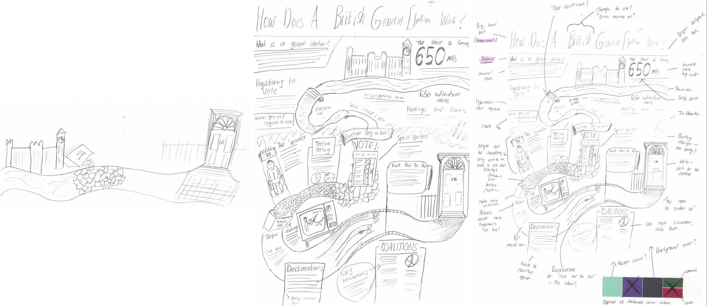
I then moved on to the computer, using Illustrator to develop a final version of my infographic.
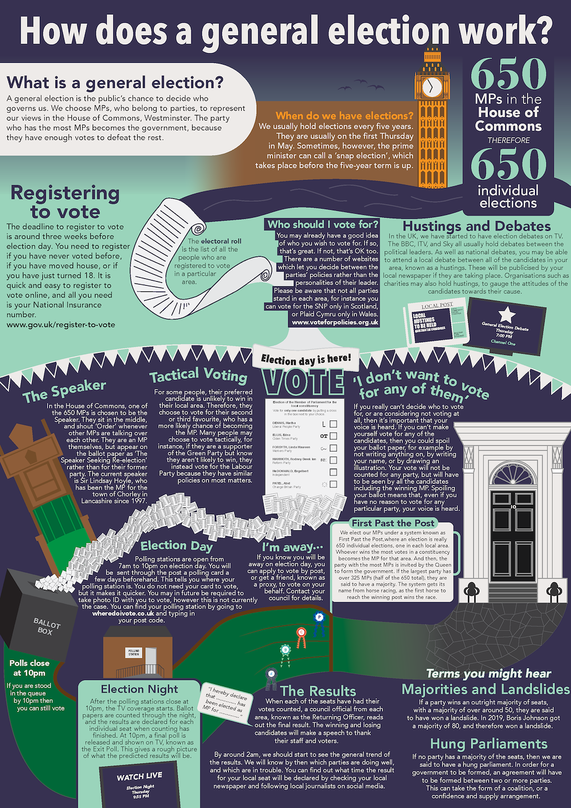
I undertook research and looked at case studies around branding, exploring the ways that designers can help to change the way that an organisation is viewed.
As part of a project in college, I responded to a live branding brief for a local skincare company known as Skin Kitchen Co.
I analysed the details about the company given in the branding brief, to look at what imagery, colour scheme, and themes my branding should incorporate.
I utilised natural imagery, scanned in from foliage picked from my garden, as part of the brand for the skincare company. This made my brand more linked to the natural world, emphasising the desire of the company's owner for her products to be seen as
ecological and pure. I created different versions of the logo, before deciding on which struck the right balance between easily reproducible and visually recognisable. I then created some physical mockups to explore the ways that the brand
could be applied to packaging.
I continued to develop my brand, creating patterns and alternative logos, and choosing a colour scheme and font which communicates the values set out in the brief.
I applied my branding system to a range of applications, including to packaging, signage, and social media.
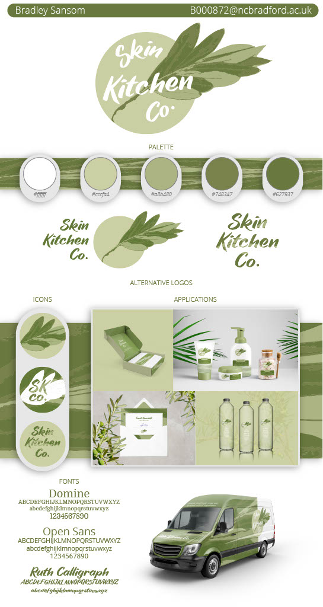
I created a Branding Style Board to showcase my designs to the client, demonstrating the flexibility of my branding system.
I evaluated my branding project, assessing what went right and how I could improve.
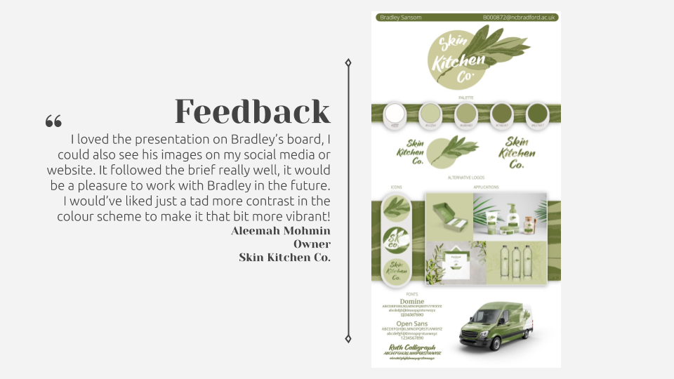
I enjoyed the chance to work on a live brief, a limitation which also helped me get used to working on tight deadlines and forced me to consider to a greater extent the desires of the client. The live brief was a design competition, in which I came second
and received positive feedback from the client.
Faced with a number of briefs to pick from as part of a mock exam paper, I chose to theme my project around the 'Haven' option. I wanted to create a number of interventions in public space around my hometown of Bradford in order to shift the balance of
the built environment in favour of pedestrians for once. I researched the huge problem of car dependency within Bradford, in order to inform my designs.
I applied some of my ideas about what I could design for wayfinding signage to some specific sites in Bradford. I looked at one specific route in Bradford, one commonly taken by tourists visiting the Media Museum via rail or bus. This is a route that
either involves a poorly-signed on-street route, or using a system of underpasses and subways which are dingy and unappealing. I looked at the sorts of signage that could be included there to brighten the area up and to improve navigation.
I also made some paper and digital sketches of isometric representations of Bradford buildings. These would then be incorporated into the graphics I eventually made.
I created animated .gif icons for many notable buildings in Bradford, in a monochrome isometric style. These were to be used on animated signage projects or on websites or apps as part of an integrated brand promoting walking in Bradford. I assembled
these into a basic website to showcase how animated signs could be created.
I also created simple animations for an arrow, to be used on directional signage, and the logos of National Rail and Metro (West Yorkshire's transport authority).
Using the sort of signage used by the Legible London project as inspiration, I produced an example of what an animated piece of signage could look like in the centre of Bradford,
allowing pedestrians to navigate between landmarks with ease.
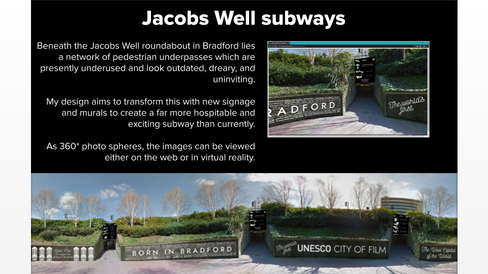
I then applied some of the icons and graphical elements I had created to a number of scenes. The first is in the subway beneath the busy Jacobs Well roundabout in Bradford city centre.
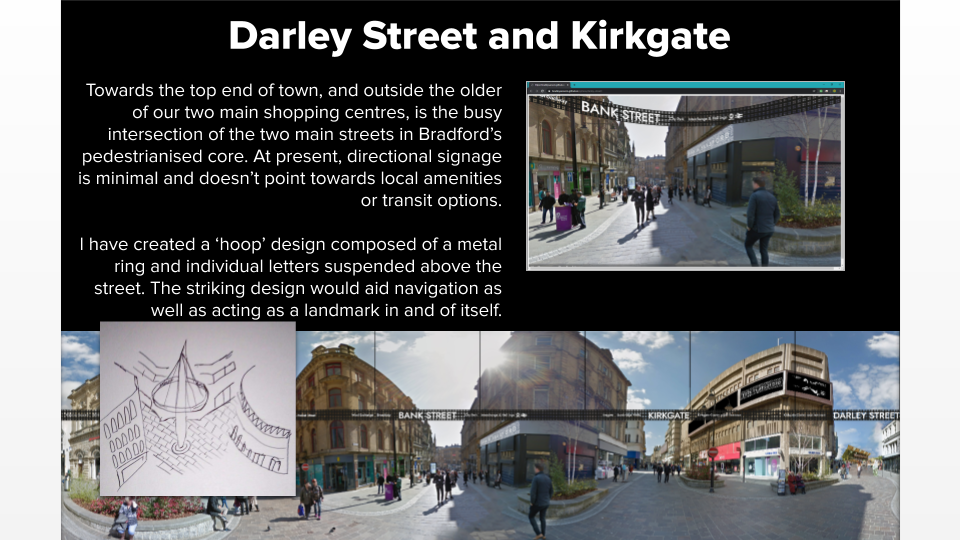
The second location was centred around one main 'hoop' design, an installation which would promote connectivity between Bradford's historic 'Top of Town' and the newer, more commercialised areas down the hill.
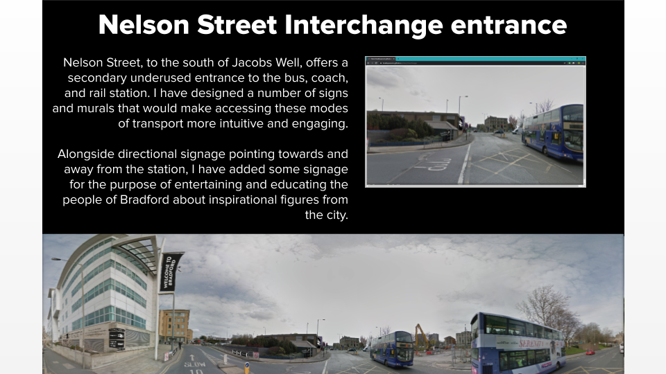
The third location is close to the rear entrance to Bradford Interchange, the main bus and rail station in the city. I added signage to improve wayfinding and to brighten the walk from the shops to the station.
Please note that the above pieces of work used imagery from Google Street View. Ideally, I'd have been able to use primary photographs to edit. However, this was not possible due to the coronavirus lockdown.
My most recent project involves creating the branding for a local TV channel. As part of the preparation for the project, I wrote a Statement of Intent summarising my aims in the project.
After conducting a photoshoot in my local area of various pieces of equipment used for picking up broadcast signals, I proceeded to manipulate these images to highlight the invisible messages being transmitted through the air continually.
I then moved on towards exploring the branding used as part of broadcasting, and specifically started a project to develop a brand for a TV station local to West Yorkshire.
I then moved on towards exploring the branding used as part of broadcasting, and specifically started a project to develop a brand for a TV station local to West Yorkshire.
I decided that the channel should be known as Channel 8. The existing network of local TV channels available in many areas operates on Freeview channel 8, and I envisage that my brand would continue this. I developed a logo based around segments of a
circle, which create the general impression of a numeral 8. Using paper, I sketched out some ways that the logo could be animated and incorporated into graphics on screen. I made sure to produce variants of the logo for different backgrounds,
so that it remains legible in all applications.
After researching the technical patterns that have been used for the decades to test the performance of TV screens, I created a range of patterns based on the test cards familiar to viewers.
I documented the sources of inspiration for the various patterns I made for the brand. It is my hope that the viewers subconsciously associate these patterns with television, both on screen and off screen.
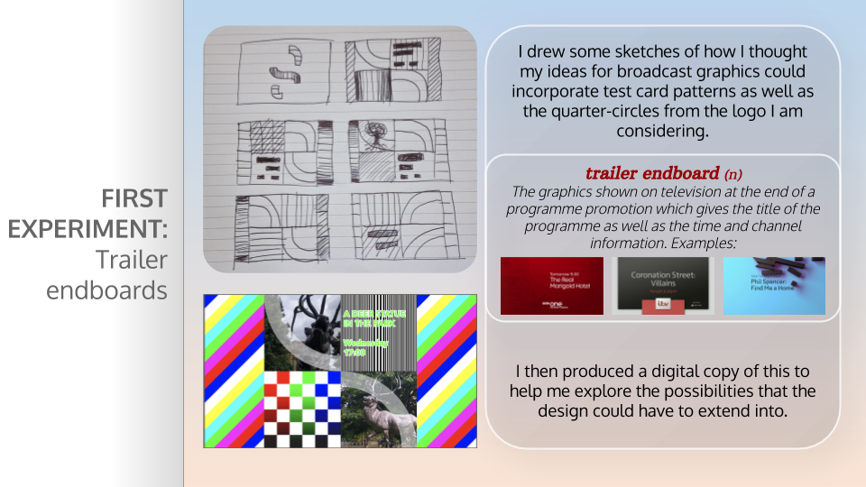
One of my first experiments in the project was creating the graphic shown at the end of a programme trailer. I sketched some ideas on paper, which incorporated the patterns alongside the curved elements from the logo.
I have produced a web app which allows unique, randomised graphics to be created for the channel. It uses the patterns I have created, and takes inputs from the user about what programme the graphic will be promoting. The idea is that every graphic generated
for the channel will be seen just once; I have calculated that there are over 300 million combinations of the patterns making up an endboard. The graphic could be tailored to fit the mood of the programme it was promoting; for instance
more sombre programmes could use just the greyscale patterns.
The generator, by deselecting the 'Show programme information' option, and selecting the 'Autogenerate' option, can produce a sequence of graphics which, when shown consecutively, would form part of the channel ident. I enjoyed the opportunity to create generative graphics during this project, an area which I would like to explore further in future.
The generator, by deselecting the 'Show programme information' option, and selecting the 'Autogenerate' option, can produce a sequence of graphics which, when shown consecutively, would form part of the channel ident. I enjoyed the opportunity to create generative graphics during this project, an area which I would like to explore further in future.
I undertook research into the different ways that TV channels generate graphics for their channels. I came across the RowZed tool, used by the BBC to show
sports graphics, which are generated through HTML. I designed and built a similar solution for my channel, which takes inputs and allows an animated graphic to be generated on the fly. This gives flexibility to my designs.
I created further graphic generators, which allow the graphics for the channel to be created generatively. This gave me an opportunity to take into consideration the needs of the wide range of audience members that would be watching; I therefore created
a graphic that would show at the beginning of a programme, flagging if the show was subtitled, audio described, and signed. I also produced a graphic which would be shown at the end of a programme, signalling what was to follow.
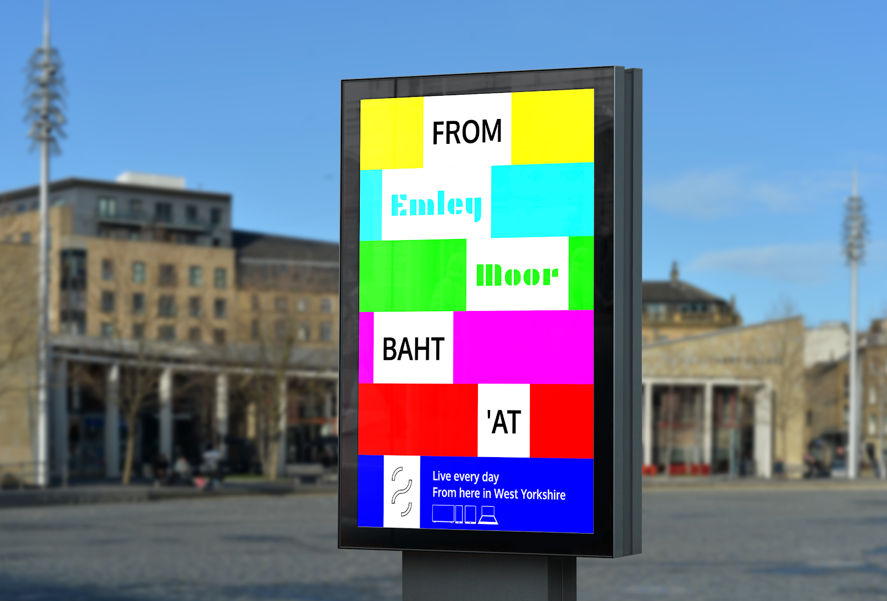
I produced a range of posters to promote the TV channel. They combine phrases associated with Yorkshire, with terms to do with TV. In the example above, the 'anthem of Yorkshire', On Ilkla Moor Baht 'At, has been combined with the
name of the landmark local TV transmitter Emley Moor, to create a uniquely Yorkshire feeling slogan for the channel. The use of the coloured bars is carried over from the patterns on screen, creating a link between the various applications
of the brand.
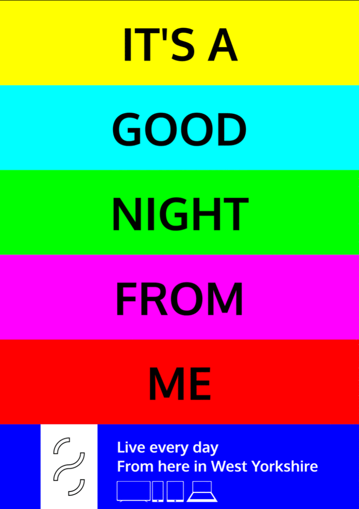
In another series of animated posters, I combined classic catchphrases from TV with the names of places in West Yorkshire. For instance, in the example above, the well-known catchphrase of The Two Ronnies is alluded to, but with
a distinct grounding in Yorkshire, symbolising the arrival of a new channel in the county. I created further such posters, which when seen as part of a series would help to raise brand awareness of the channel.
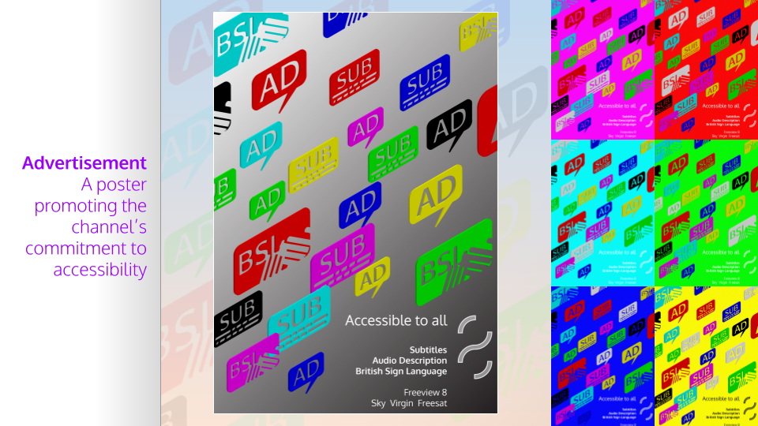
I produced a set of posters featuring the accessibility icons I had created. I compiled them into a 3D scene, and made versions in each of the brand's signature colours. These posters help to promote the inclusive, public service values of a channel that
strives to cater to all through the provision of subtitles, audio description, and sign language.
I produced an animated graphic for promoting the channel's launch on social media. I then created a mockup of how this would look on a social media feed.
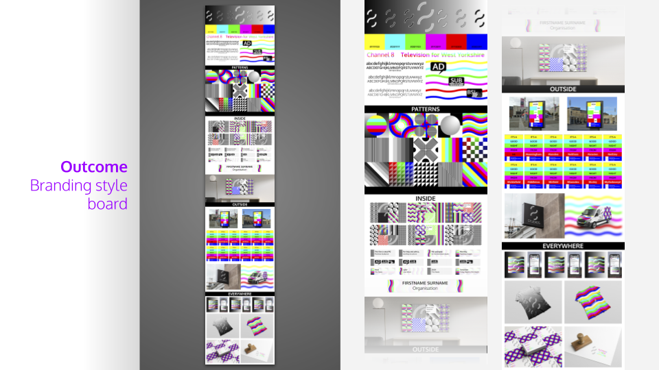
I produced a branding style board to summarise the work I had done on the brand. I included the colours and fonts I had used as a reference, and then added mockups of how the graphics I had produced would look on screen and elsewhere.
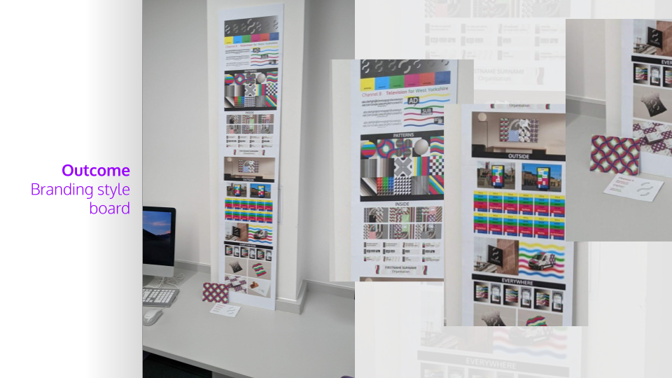
I printed out my branding style board and mounted it.